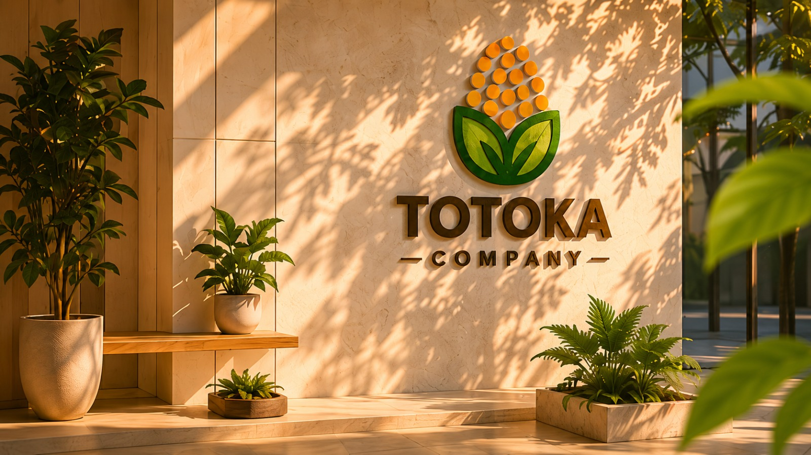

Sostenible
Aprovechamos residuos agrícolas para reducir el impacto ambiental.
 TOTOKACompany
TOTOKACompany
Del desecho al desarrollo
Desarrollamos materiales innovadores a partir de residuos agrícolas, impulsando la economía circular y el cuidado del medio ambiente.

Aprovechamos residuos agrícolas para reducir el impacto ambiental.
Materiales con propiedades únicas y de alto desempeño.
Promovemos la economía circular en cada etapa de nuestro proceso.
Productos resistentes, seguros y confiables para diversas aplicaciones.
Nosotros
En TOTOKA convertimos residuos agrícolas en materiales de alto valor, creando soluciones sostenibles que contribuyen a un futuro más limpio y responsable.

Nuestros productos

Resina acrílica sostenible elaborada a partir de polímeros reciclados y descargas vegetales.
Ver más
Pintura ecológica base agua para aplicaciones arquitectónicas básicas.
Ver más
Impermeabilizante ecológico formulado con materiales reciclados y protección superficial.
Ver más
Sostenibilidad